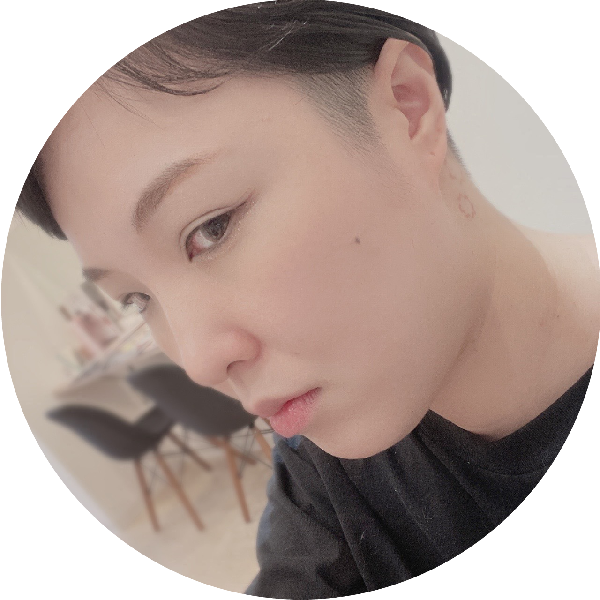
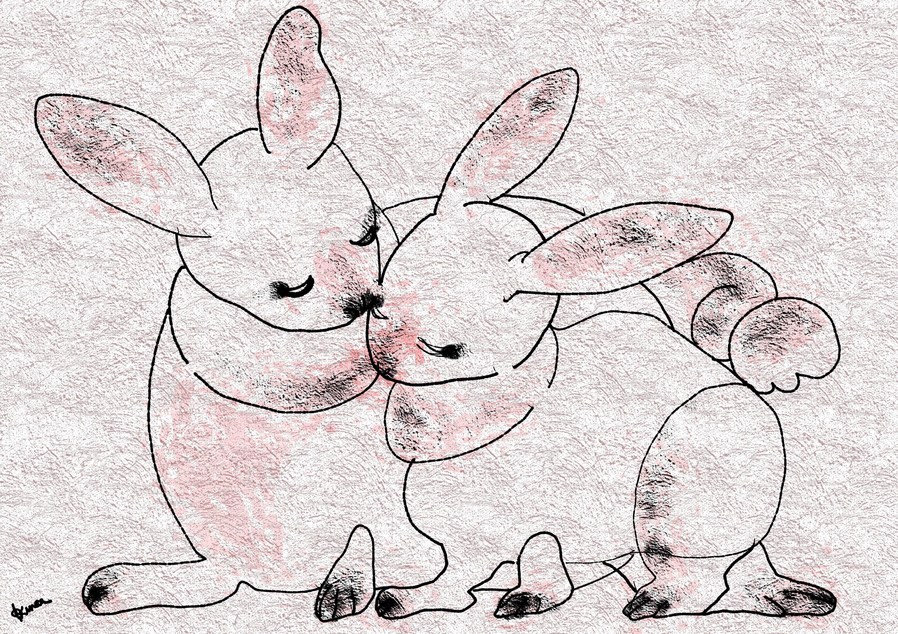
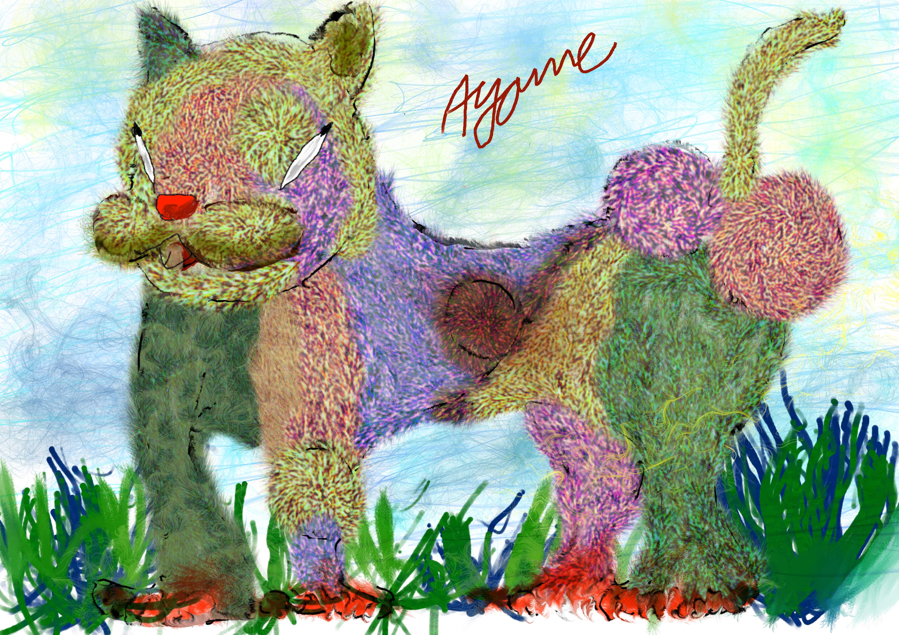
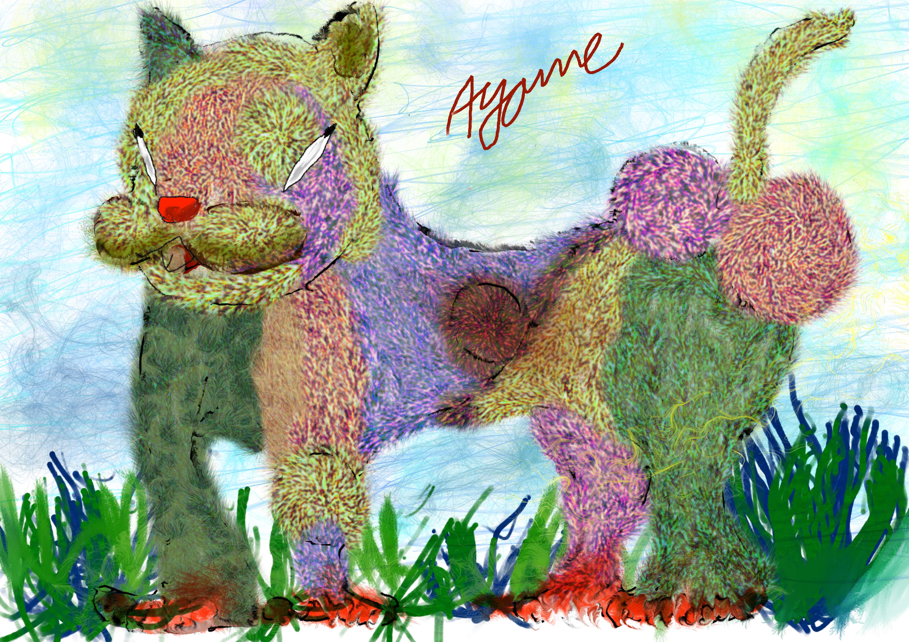
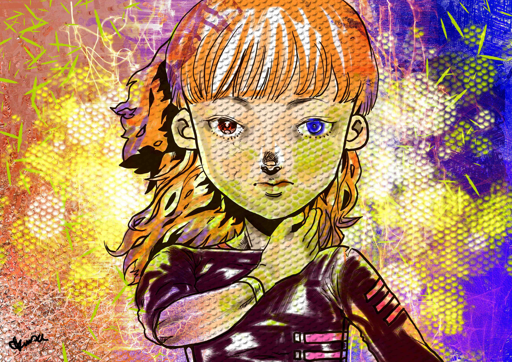
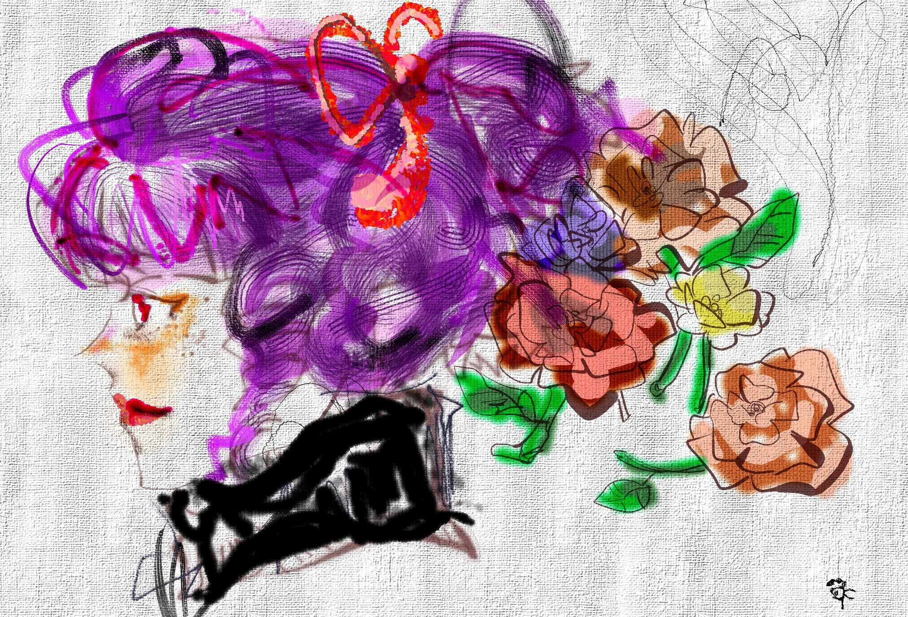
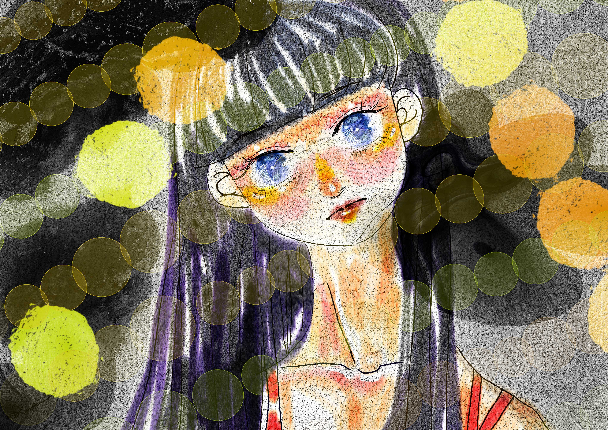

❀ゆづぴの紹介❀

1984年生まれの東京出身で、現在は神奈川に在住するアーティストです。
私は難病疾患と広汎性発達障害を抱えていますが、周囲の理解と応援が私の創作活動のエネルギー源となっています。
デザイナーとしてもイラストレーターとしても活動しており、幅広いクリエイティブな活動を行っています。
また、犬の保護活動にも力を入れており、犬張子なども制作しています。
私のアートは、内なる感情や困難に向き合いながらも、美しさや希望を表現することを目指しています。
どんな形でも表現の可能性を追求し、世界に感動とインスピレーションを与えることを目指して日々努力しています。
am an artist born in 1984 in Tokyo and currently residing in Kanagawa. Despite facing the challenges of a rare disease and autism spectrum disorder, I am dedicated to my creative pursuits, fueled by the understanding and support of those around me. I am actively engaged as a designer and illustrator, and I am also involved in dog rescue activities, creating dog puppets and more. My art aims to express beauty and hope, even in the face of inner emotions and difficulties. I constantly explore the possibilities of expression in any form, striving to inspire and evoke emotions in the world.
❀作品❀

 

お仕事のご依頼を受け付けています
イラストやアート作品の制作について、A4サイズでのご依頼はおおよそ9,000円から承っております。
まずはこちらの連絡先からお気軽にお問い合わせください＾o＾*
ライセンス販売についてもご相談承っておりますので、お気軽にお問い合わせください。
※個人のお客様のお支払いはアズカリ.appを使用しております。企業の方は銀行振込をお願いしております。
※無償でのお仕事はお引き受けしておりません。
ご依頼いただけると幸いです。どうぞよろしくお願いいたします。
We are accepting job requests. For illustration and art pieces, we typically charge around ¥9,000 for A4 size. Please feel free to contact us through the provided contact information to inquire further. We are also open to discussing licensing options, so please don't hesitate to reach out.
Please note that individual customers are requested to use the Azukari.app for payment, while corporate clients are kindly asked to proceed with bank transfers. Unfortunately, we are unable to accept unpaid work.
We would be delighted to receive your requests. Thank you in advance, and we look forward to working with you.
❀連絡先❀
以下の内容に基づいて、ご依頼やお問い合わせをお待ちしております。
メールには、以下の４点を必ずご記入ください。
【お名前（ハンドルネーム不可）】
【メールアドレス】
【お電話番号】
【ご要件】
これらの項目が抜け漏れなく記載されているメールに対して、迅速な返信をいたしますので、ご了承ください。
お仕事のご依頼や登壇・取材のご要望、または応援のメッセージなど、どんな内容でもお気軽にお寄せください。
ご興味を持っていただけましたら、ぜひメールをお送りください。
心待ちにしております。どうぞよろしくお願いいたします。
We are eagerly awaiting your inquiries for job requests, speaking engagements, interviews (related to welfare, art, etc.), or messages of support.
In your email, please make sure to include the following four points:
[Full Name (No nicknames)]
[Email Address]
[Phone Number]
[Request/Requirement Details]
Please understand that if any of these points are missing, we may not be able to respond to your email.
We look forward to receiving your email and will strive to provide a prompt response. Whether it's a job request, a request for a speaking engagement or interview, or simply a message of encouragement, please feel free to reach out.
Please remember to include all the necessary information. Thank you for your understanding.
We eagerly await your email. Thank you and best regards.
Mail to：yudzuru[@]aol.com
[@]-> @